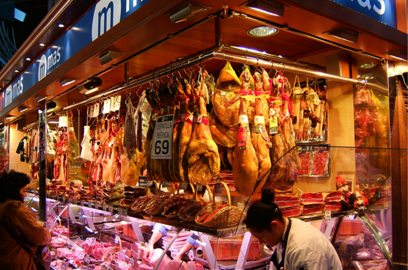
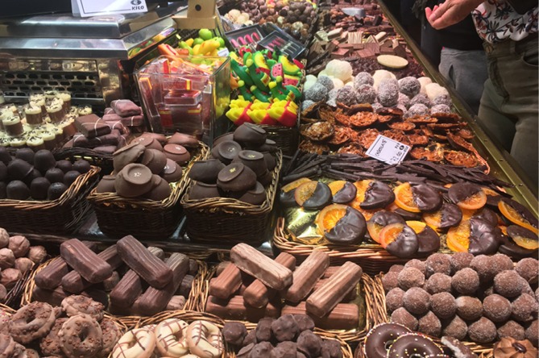
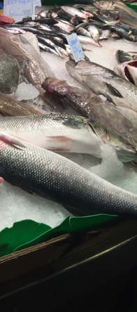
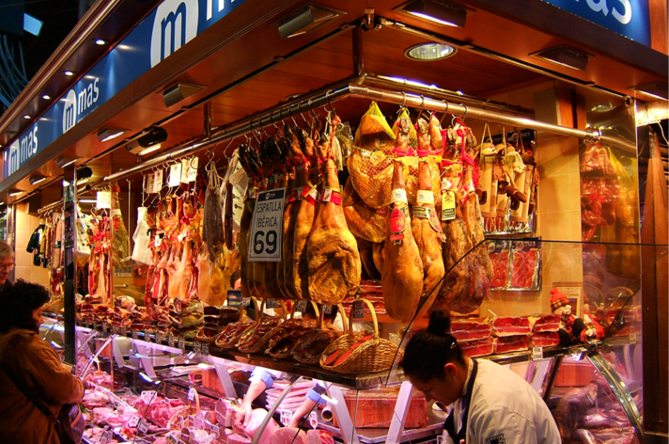
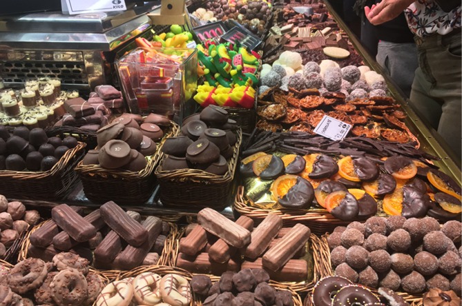
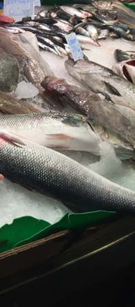

Barcelona - Mercat de la Boqueria
Die Markthallen des Mercat de la Boqueria
Die Markthallen gehen auf einen Straßenmarkt zurück, der an der Rambla abgehalten wurde. Seit 1217 weiß man von Tischen, die in der Nähe des ehemaligen Stadttors Boqueria aufgestellt wurden, um Fleisch zu verkaufen. Ab 1470 wurde im Dezember dort der Schweinemarkt abgehalten. Der Platz befand sich noch vor den Stadttoren Barcelonas und auch andere Händler boten dort oder in der Nähe ihre Waren feil. Man nannte den Markt damals Mercat Bornet oder (bis 1794) einfach Mercat de la Palla („Strohmarkt“)